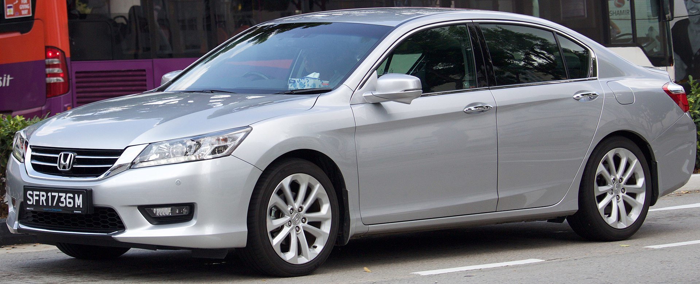
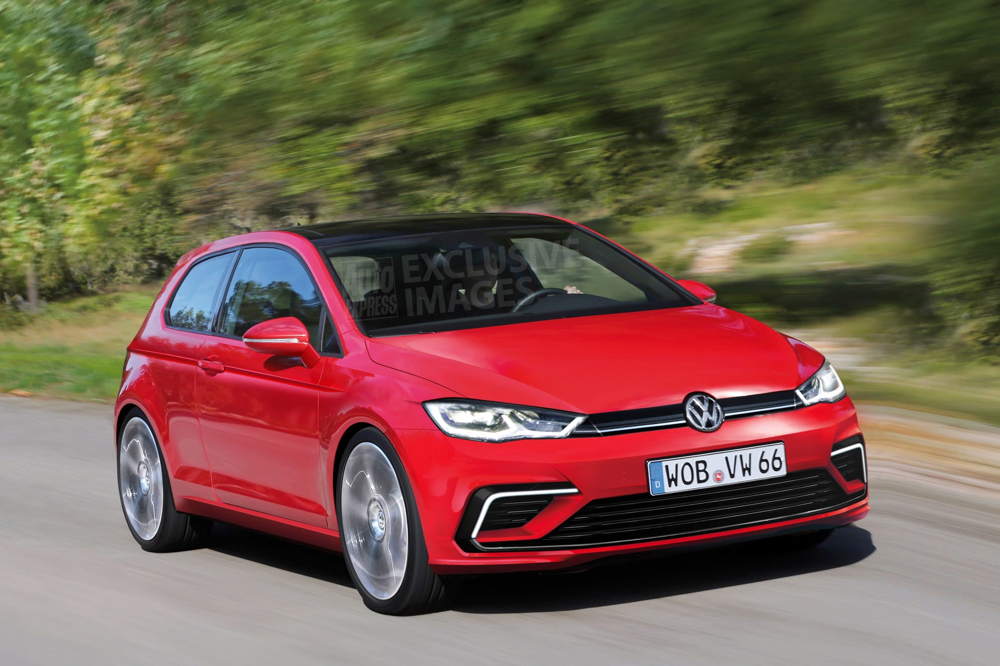

Honda Accord |
|
|  more images | The Honda Accord /əˈkɔːrd/ is a series of automobiles manufactured by Honda since 1976, best known for its four-door sedan variant, which has been one of the best-selling cars in the United States since 1989. The Accord nameplate has been applied to a variety of vehicles worldwide, including coupes, wagons, hatchbacks and a crossover. The Honda Accord mainly competes against cars such as Buick's Regal, Chevrolet's Malibu, Ford's Fusion, Hyundai's Sonata, Kia's Optima, Mitsubishi's Galant, Nissan's Altima, Toyota's Camry and Volkswagen's Passat. |
Volkswagen Golf |
|
|  more images | The Volkswagen Golf (About this sound listen (help·info)) is a small family car produced by the German manufacturer Volkswagen since 1974, marketed worldwide across seven generations, in various body configurations and under various nameplates – such as the Volkswagen Rabbit in the United States and Canada (Mk1 and Mk5), and as the Volkswagen Caribe in Mexico (Mk1).The original Golf Mk1 was a front-wheel drive, front-engined replacement for the air-cooled, rear-engined, rear-wheel drive Volkswagen Beetle. Historically, the Golf is Volkswagen's best-selling model and the world's second best-selling model,[dubious – discuss] with more than 29 million built by 2012. |